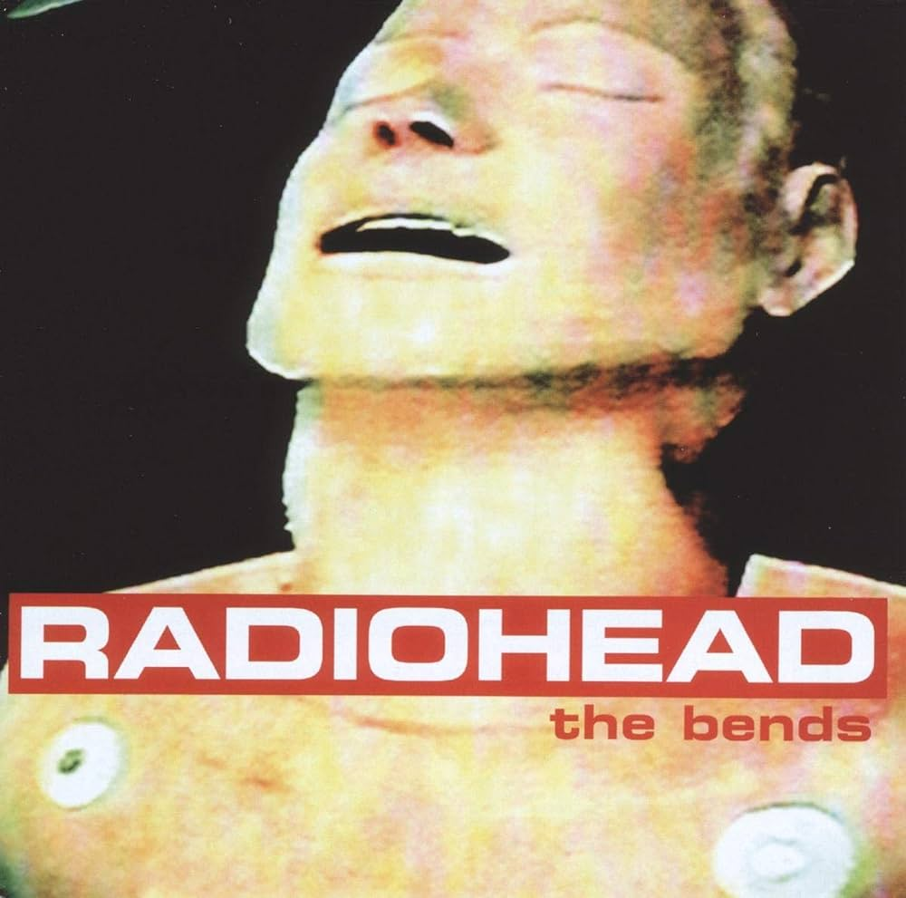

Visit The radiohead public library!
The bends
Where do we go from here?
The words are comin out all weird
Where are you now when I need you?
Alone on an aeroplane
Falling asleep against
the window pane
My blood will thicken
I need to wash myself again
To hide all the dirt and pain
'Cause I'd be scared
That there's nothing underneath
And who are my real friends?
Have they all got the bends?
Am I really sinking
this
low
My baby's
got The Bends
We don't have any
real friends, no, no, no
Where do we go from here?
The planet is a gunboat in a sea of fear
And where are you?
They brought in the CIA
The tanks and the whole marines
To blow me away
To blow me sky high
The Bends, but is the album.

- Planet Telex
- The Bends
- High and Dry
- Fake Plastic Trees
- Bones
- Just
- My iron Lung
- Bullet Proof ... I Wish I Was
- Black Star
- Sulk
- Street Spirit (Fade Out)
Original Members
- Thom Yorke
- Jonny Greenwood
- Colin Greenwood
- Philip Selway
- Ed O'Brien
"A little bit about them
- The Bends(album)
- The Bends é o segundo álbum de estúdio da banda
- A capa
- A capa do album se trata de um manequim de RCP, filmado em um hospital pelos proprios membros, um deles o descreveu como que tendo
"uma expressão facial como a de um andróide descobrindo pela primeira vez as sensações de êxtase e agonia, simultaneamente".
- Criticas
- o album recebeu criticas que diziam coisas como: "disco poderoso, machucado, majestosamente desesperado, com músicas assustadoramente boas";
"se transformado de guitarristas sem descrição em potenciais artistas de arena... A grandiosidade pode acabar se esvaindo, como aconteceu com o U2,
mas já faz anos que o rock de grande impacto não soa tão emocional".
Thom Yorke
- - vocais principais, guitarras, piano; arranjos de cordas
Ed O' Brien
- - guitarra, vocal de apoio
Jonny Greenwood
- - guitarra, órgão, gravador, sintetizador, piano; arranjos de cordas
Colin Greenwood
- - baixo
Philip Selway
- - bateria